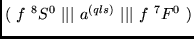

In this case the subroutine finds the value of a RCFP
.
>From Table IV of P4 [6] we see that the value of this coefficient is
equal to
It is necessary to mention that in the calls to this and some other subroutine, the input of a term number and term characteristics is needed. In this case the user indicates only the term characteristics, and finds the term number by using the subroutine NUMTER (see in Section 3.2) or NUMTERF (see in Section 3.3). In other examples we will present a way, showing how to call subroutines of analogous type, by defining just the term number by the user.